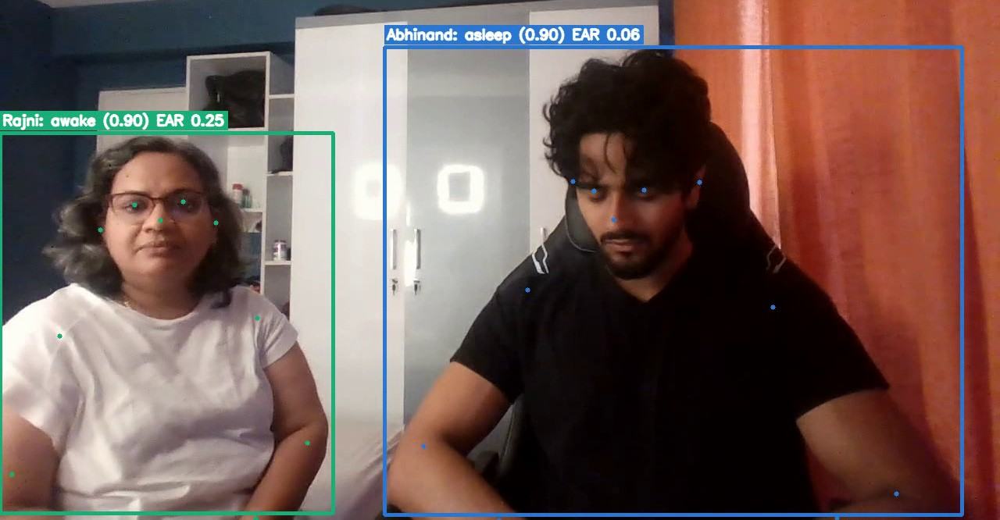
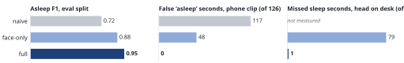
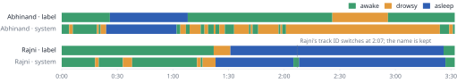

Given an ordinary webcam video, my system says for every person and every second whether they are awake, drowsy, asleep, unknown or absent, lists their sleep intervals, and names each person from one reference photo. It uses only pretrained models plus a small set of explainable rules; nothing was trained.
A camera cannot see brain activity, so I detect behavioural sleep: what a person watching the video would
call asleep. The rule depends on what is visible, and every threshold below is a setting in config.yaml.
Why these choices. Ten seconds is far longer than a blink or a short eye rest, and requiring stillness as well stops “eyes closed while thinking” from counting. Without the eyes there is less evidence, so the body-only path waits longer and reports lower confidence. Waking up needs 2 s of open eyes or clear movement, so one bad frame cannot flip the state.
| People | YOLOv8n-pose (6.8 MB) finds people and 17 body keypoints; ByteTrack keeps one ID per person. Gives posture and a box to measure motion in. |
| Eyes | YuNet (0.2 MB) finds faces; MediaPipe Face Landmarker (3.8 MB) gives 478 face points and head angles. Eye aspect ratio (EAR) from 6 points per eye, calibrated on each person’s first 10 s facing the camera. Cheap, explainable, and per-person calibration handles different eye shapes. |
| Head pose | Eyes are trusted only when the head is roughly frontal: turned < 35°, tilted down < 25° from normal and < 20° from the camera. Looking down at a phone makes open eyes look closed. |
| Motion | Pixel-change “motion energy” inside the person’s box minus background change. Sleep means stillness; subtracting the background ignores light flicker and camera noise. |
| Identity | SFace 128-number face embeddings compared with refs/, voted over the whole track
(threshold 0.363), with a clothing-colour backup. The name stays when the face is hidden. |

I had about 25 minutes of my own footage, which is enough to test rules but far too little to train a sleep classifier that I could trust. Rules built on well-tested pretrained detectors are easy to explain (each output row says why, e.g. “eyes closed + still 10 s”) and easy to fix when they fail.
The pipeline runs in two passes: the slow model pass is cached (signals.pkl), and the fast rule pass can be
re-run and tuned in seconds. There are 47 automated tests and a tested Dockerfile.
Data. 9 clips (about 25 min, 1280×720, laptop webcam, one room). Eight have one person: normal work, 5 s eye closures, acted sleep facing the camera (×2), head on desk, sideways on a phone, looking down at a phone, and dim light. One clip has two people (Abhinand and Rajni, 3.5 min). Every second was labelled by hand; closures under 10 s are labelled drowsy.
Split. Tune = clips 1, 3a, 4a (486 s). Only two thresholds were grid-searched there (24 combinations):
closed_ratio 0.6 → 0.5 and still_threshold 0.01 → 0.02. Eval = clips 2, 3b, 4b, 5, 6, 8
(1161 person-seconds), scored once with those values.
Baselines. Naive: eyes below threshold = asleep, no timing. Face-only: my state machine without the body signals. Full: everything above. Metrics are per second with asleep as the positive class: precision, recall, F1, IoU of asleep seconds, plus accuracy over all five states.
| system | precision | recall | F1 | IoU | accuracy, all states |
|---|---|---|---|---|---|
| Naive | 0.58 | 0.96 | 0.72 | 0.57 | 0.80 |
| Face-only | 0.82 | 0.96 | 0.88 | 0.79 | 0.77 |
| Full system | 0.95 | 0.95 | 0.95 | 0.91 | 0.78 |
On eyes-closed sleep facing the camera the full system reaches F1 0.98 (clip 3b), and 0.95 in dim light at 16 fps (clip 6). All three 5 s eye closures in clip 2 were called drowsy, not asleep (naive: 15 false asleep seconds). With two people (clip 8) F1 is 0.94 and both are named correctly. Speed is 5–9 processed frames/s on a laptop CPU with no GPU, i.e. 1–2.2× the video length.


The first evaluation gave eval F1 0.61 (kept in outputs/evaluation_v1_before_fixes/).
Looking at the eval failures, I found three bugs and fixed each with a new test:
Four label spans in clips 4b and 8 disagreed with the video; the actor re-checked and corrected them (clip 4b was really phone use, not sleep). Both steps used eval clips, so the final 0.95 is optimistic. The tune-split F1 (0.96) did not change.
Head pitch was +15° to +31° while looking at a phone and about +18° when dozing with the chin dropped. The 20° limit separates them on my clips, but the margin is only a few degrees.
225 of 794 labelled-awake eval seconds were called drowsy, mostly the head-nodding rule firing on normal head movement. It does not touch the asleep metrics, but keeps all-state accuracy at 0.78.
No eval clip has it (clip 4b turned out to be phone use), so the body-only path is only tested on clip 4a, a tune clip. In clip 8, sleep onset was found about 8 s before the label (Rajni’s eyes closed at 1:22).
Acted sleep, two people, one room, one camera. The offline “backfill” marks the first 10 s of a sleep once it is confirmed, so a live version would report onset 10 s late.
One explainable state per person per second can grow into a monitoring tool for places where falling asleep matters, with video kept on the device.